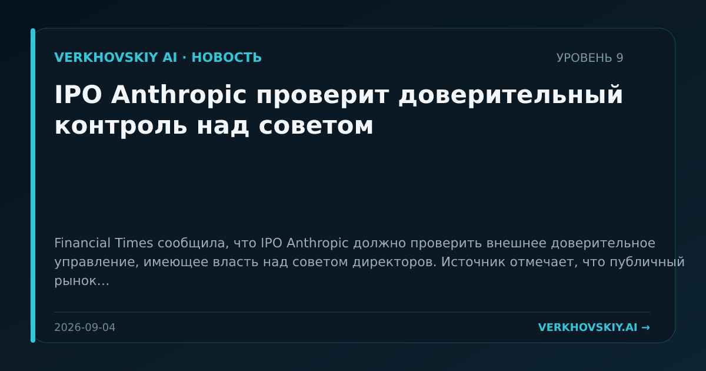

IPO Anthropic проверит доверительный контроль над советом
Financial Times сообщила, что IPO Anthropic должно проверить внешнее доверительное управление, имеющее власть над советом директоров. Источник отмечает, что публичный рынок усилит давление на попытку производителя Claude сочетать прибыль и назначение компании. Почему это важно: Финансовый рынок начинает оценивать не только выручку модельных компаний, но и их институциональную архитектуру. Это связывает доступ к капиталу с доверием к управлению безопасностью и целями компании.